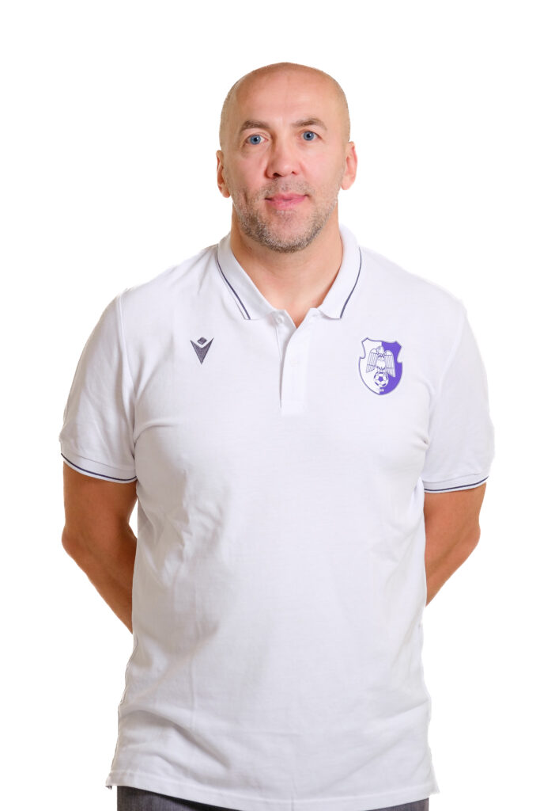

Vidić și-a început cariera de antrenor la 22 de ani, pe când era încă un jucător activ. A fost antrenor principal pentru Tamiš și Sveti Đorđe în anii 2000. În sezonul 2011-2012, Vidić a fost antrenorul principal al echipelor Þór Akureyri din Premier League islandeză. În sezonul 2013-2014, Vidić a fost antrenorul principal al echipei Lokomotiv-Kuban 2 din Liga de Tineret VTB United. În februarie 2016, clubul bulgar Balkan Botevgrad l-a angajat pe Vidić ca nou antrenor principal. În iunie 2016, a semnat cu Balkan pentru sezonul 2016-2017. În mai 2017, a semnat cu Balkan pentru încă un sezon. După o victorie cu 3-1 asupra lui Levski Lukoil în finala din 2019, Vidić a câștigat Liga Națională Bulgară în sezonul 2018-19 cu Balkan. A fost primul lor titlu național în 30 de ani. În mai 2019, a părăsit Balkan Botevgrad. Înainte de sezonul 2019-20, Vidić a devenit antrenor secund la Nijni Novgorod sub conducerea lui Zoran Lukić. Pe 10 martie 2021, Tamiš l-a angajat ca noul lor antrenor principal.